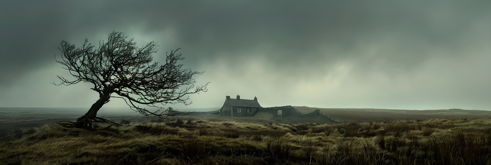

Introduction
This is not a love story. It is a study in what love does to people who cannot survive without it.
Origin
Year of first publication
In the Victorian era, women were confined by rigid social expectations. Their primary role was to embody the ideal of the "angel in the house" - passive, domestic and morally contained. Professional education and creative self-expression were not encouraged, and a woman artist regularly faced open rejection, moral lectures or worse. When Wuthering Heights was published, it became a direct challenge to Victorian morality through its wild energy and characters that contemporary critics described as "more savage than the savages who lived before the time of Homer." The public was shocked by the depiction of "half-savage love" and "brutal cruelty," considering such themes entirely unacceptable and morally "unhealthy" for a woman to have written. Any expression of emotional excess or rebellion was read as a sign of hysteria or psychological instability - a label used systematically to discredit women's voices.
The decision to publish under the pseudonym Ellis Bell was a strategic act of resistance - a fight for the right to have a voice in a literary world considered exclusively male. Emily Brontë and her sisters consciously chose masculine names (Currer, Ellis and Acton Bell) to ensure their work would be judged on its literary quality rather than filtered through the prejudiced lens of the author's gender. At a time when a woman's intellectual freedom was directly dependent on her material and social status, the pseudonym allowed Emily to "break her role as a woman" and write characters stripped of traditional Victorian virtue. Even after the true authorship was revealed, Charlotte Brontë felt the need to defend and "sanitise" the text in prefaces, attempting to justify the wildness and cruelty of her sister's imagery to an outraged public.
The reader is scarcely ever permitted a glimpse of sunshine.
Early review, 1848
Phenomenon
The phenomenon of Wuthering Heights lies in its striking originality and force, which gave it a singular place in the canon of English literature. The novel departed decisively from the Victorian norms of the time, focusing not on a broad panorama of society but on the intense inner world of individual experience. Emily Brontë's psychological insights have been described as "startlingly modern," and the depth and ambiguity of her characters continues to inspire new interpretations. The novel became a unique hybrid combining elements of gothic tradition, romanticism and austere realism, effectively transcending the boundaries of established literary genre. Brontë created a fictional world that simultaneously frightens, challenges moral assumptions and draws the reader in through its elemental energy.
The story of Catherine and Heathcliff continues to generate deep emotional response because of its depiction of "half-savage love" and an unprecedented spiritual unity between two people. Their bond exceeds the boundaries of ordinary earthly feeling: Catherine declares "I am Heathcliff," affirming that the other is not simply an object of love but her own being, existing outside her body. The emotions of the characters function differently from those in conventional prose - they do not simply reside inside the characters but surround them, like storm clouds, creating an atmosphere of affect that operates beyond language. This passion is so intense and obsessive that it becomes a destructive force, eliminating everything around it while remaining unbreakable even after death.
The novel is often described as a work that "baffles regular criticism" because of its deliberate refusal to conform to traditional ideas of virtue and literary morality. It offers no clear moral conclusion, instead unfolding a picture of brutal cruelty, sadism and wild force that shocked its first readers. Brontë's characters were described by critics as "savages, ruder than those who lived before Homer," which entirely contradicted the Victorian ideal of civilised behaviour and the "angel in the house." The novel's structure is non-linear and unusually complex, making it an "open masterpiece" that resists single, final definition. This hybrid nature and its rejection of established genre and ethical constraints make it a unique literary phenomenon, standing apart from all contemporary prose.
Psychology
The true nature of the bond between Catherine and Heathcliff remains one of the great unresolved questions that has divided critics and readers for more than a century. For many it represents an unprecedented spiritual unity - the relationship of "mental twins" whose souls are identical in their essence. When Catherine cries "I am Heathcliff," she asserts that the other is not merely the object of love but her own being, existing outside the boundaries of her body. Yet this bond deviates sharply from conventional ideas of love, because it contains almost no empathy, mercy or care. It is rather a "half-savage love" that abandons culture and ethical norms, becoming an elemental force that resists human control.
The line between love and obsession in the novel dissolves completely at the moment of Catherine's "self-betrayal," when she chooses social status over her own nature. From this point their feelings acquire an addictive character, where each person seeks absolute possession of the other. Heathcliff's obsession becomes demonic: he cannot live "without his soul," which Catherine embodies, and he turns his existence into eighteen years of torment, waiting for her ghost. This is not simply romantic passion but psychological dependency, where the desire to be together becomes a destructive force that brings only new wounds and "moral poison" to both.
This bond destroys everything around it because it is egocentric and refuses to acknowledge other people's right to happiness. The inner disorder in the souls of Catherine and Heathcliff creates a "storm atmosphere" that spreads outward, drawing even innocent family members into a vortex of suffering. Their passion operates like fire that consumes everything in its path, turning their homes into prisons and the lives of those around them into instruments for manipulation and revenge. Ultimately, their love - built on a shared experience of rejection and pain - becomes a personal hell where peace is only possible through total destruction of earthly life.
I am Heathcliff - he's always, always in my mind - not as a pleasure, any more than I am always a pleasure to myself.
Catherine Earnshaw
Interpretation 01
A spiritual union beyond earthly feeling.
Interpretation 02
A psychological dependency built on shared trauma.
Interpretation 03
A destructive force that refuses to be named.
Atmosphere

The setting as system
The atmosphere of nature in Wuthering Heights is not decoration but the externalisation of the characters' inner chaos. The wild landscape of the peat moors serves as a symbol of uncontrollable threat, where the "atmospheric tumult" of the house itself directly mirrors the severe character of its inhabitants. The emotions of Heathcliff and Catherine are not enclosed within them but surround the characters like storm clouds, filling the story with an energy stronger than words or thoughts. Storms, tempests and sharp shifts in weather always presage dramatic change or catastrophe, turning nature into a silent but active witness to psychological upheaval and "explosive" emotional states.
The visual aesthetic of the novel is built on radical contrast that underlines the conflict between primal wildness and artificial civilisation. Wuthering Heights appears as a "dark, cold and grotesque" place on the hilltop, surrounded by "stunted firs" and thorny plants that indicate the absence of sunlight and warmth. In opposition, Thrushcross Grange in the valley is filled with light, comfort and gold, symbolising the refinement of Victorian life. This visual dissonance - "like lightning against moonshine" - becomes a metaphor for the incompatible worlds between which the characters are torn.
The setting in the novel functions as an autonomous system that dictates the behaviour of characters and forms a general atmosphere of anxious anticipation. The vast and dangerous moorland creates a sense of isolation and even "imprisonment," where the inhabitants are cut off from wider society and governed only by their own destructive patterns. The house itself, with its narrow windows and chains on the gate, resembles a prison for souls, and the mood of the story is constantly fed by this "dark spiritual atmosphere." In such surroundings, passion becomes a fatal force, and every element of the landscape - from the flagstones to the clouds in the night sky - is transformed into a painful reminder of the impossibility of peace.
Society
Heathcliff enters the world of the novel as "a child of the gutters," an outsider without a name or origin, whose fate depends entirely on the mercy of the patriarchal master. His status in the household remains precarious - from the favourite of Mr Earnshaw to a farmhand whom Hindley deliberately reduces to the level of a simple labourer, stripping him of education and the right to human dignity. Class inequality becomes for him not simply a social barrier but an instrument of psychological violence, which shapes his drive toward revenge. Society creates the "outsider" through the mechanism of rejection: Heathcliff is "foreign" in any system of coordinates, because he has no legitimate place in the hierarchy of inheritance.
Wuthering Heights
hilltop
wind and stone
isolation
Thrushcross Grange
valley
light and gold
belonging
Catherine's choice in favour of Edgar Linton demonstrates the brutal reality of the Victorian era, where social status and material security outweigh emotional attachment. She understands that marriage to Heathcliff would "degrade" her, while a union with Linton is the only path to becoming "the greatest woman of the neighbourhood" and earning social respect. This self-betrayal is based on the illusion that status can be used as a tool: Catherine naively believes that her husband's money will help her "raise" Heathcliff and free him from her brother's power. In a world where a woman's intellectual freedom depends directly on her material position, sincere feeling becomes a dangerous luxury.
The alienation of the characters is made visible through the radical contrast between two worlds: Wuthering Heights as a place of primal wildness and Thrushcross Grange as a symbol of refined but closed elite society. Entry into the Grange signifies the acquisition of status, but it also means isolation from one's own nature and "imprisonment" within social expectations. Society creates outsiders by marking them as "other" through the absence of culture or wealth, effectively stripping them of the right to compassion. Heathcliff returns as a wealthy gentleman only to use those same unjust laws of property to destroy the system that once rejected him.
Vengeance
Heathcliff's revenge is not a sudden flare of anger but becomes the fundamental meaning of his existence once he understands the impossibility of union with Catherine in the real world. Having been "a child of the gutters" and the object of constant humiliation by Hindley, he accumulates bitterness over years, which eventually transforms into a cold and destructive strategy. His choice of revenge over forgiveness is explained by the psychology of "unlove" - in a world where love is associated only with pain and rejection, Heathcliff attempts to reclaim power through total domination. When Catherine chooses Edgar Linton for the sake of social status, it becomes for Heathcliff the final act of betrayal, transforming the former victim into a merciless oppressor.
the years of degradation under Hindley.
wealth as a weapon, the system turned against itself.
revenge that consumes its own architect.
I have no pity! The more the worms writhe, the more I yearn to crush out their entrails.
Heathcliff
The transmission of revenge across generations in the novel has the character of "repetition-compulsion," where children become hostages to the sins of their parents. Heathcliff consciously uses Hareton and young Cathy as instruments for completing his plan, making no distinction between the guilty and the innocent. In seeking retribution against Hindley, he systematically degrades Hindley's son Hareton, turning him into an uneducated farmhand - an exact reflection of his own humiliated past under the Earnshaws. His own son Linton he uses as a legal instrument for seizing the Linton estate, expertly manipulating the patriarchal laws of inheritance. In this way, revenge becomes an autonomous system that seeks to destroy the genealogy of both families.
Heathcliff himself does not seek moral justification for his actions - he claims he has done no injustice, having only mirrored the cruelty of those around him. Yet his triumph proves illusory: he loses the "capacity to enjoy destruction" when he begins to see features of his Catherine in the eyes of the younger generation. Revenge as a driving force exhausts itself not through Heathcliff's external defeat but through his inner depletion and obsession with a supernatural bond. Ultimately, the cycle of violence is broken only through Hareton and young Cathy's capacity for forgiveness - a virtue unavailable to Heathcliff, but which becomes the only path toward the restoration of wholeness.
Repetition
Generation One
Catherine & Heathcliff
The cyclical structure of the novel is driven by the mechanism of "repetition-compulsion," through which the psyche attempts to relive traumatic experience from the past in order to finally master the surplus of emotions that defeated the previous generation. This repetition is reinforced by a striking structural symmetry: key events in both generations occur with mathematical precision at the same ages - at 13, 16 and 19. There is also a process of "affective transmission," where emotional states and even specific linguistic patterns - such as whipping imagery or threats of murder - are passed transhistorically, compelling the children to unconsciously imitate the destructive patterns of the adults.
Generation Two
Young Cathy & Hareton
The new characters - young Cathy and Hareton Earnshaw - receive the chance to escape this cycle through their capacity for forgiveness, a moral quality entirely absent from the relationships of the first generation. Unlike the elder Catherine, young Cathy demonstrates an "other-oriented" position, choosing compassion over egocentrism, which allows her to transform an enemy into an ally. Their union symbolises healing through integration: they combine the strength and nature of the Earnshaws with the intellectual qualities of the Lintons, and ultimately leave the dark Wuthering Heights to its ghosts, choosing life in the light of Thrushcross Grange.
Commentary
Fate or choice
This story is simultaneously fate and conscious choice: while the archetypal nature of the first generation gravitates toward tragedy, the development of the second generation demonstrates the path toward psychological liberation. Fatal determination appears in the fact that the children are born into the storm of others' conflicts - yet it is precisely their deliberate act of reconciliation that stops the mechanism of revenge. Ultimately, the novel argues that although the past shapes our environment, a conscious refusal to submit to the tyranny of our own passions allows the individual to become the master of their world rather than its victim.
She was never meant to choose. She was meant to be chosen.
editorial note, not a direct quotation from the novel
Gender
Catherine's choice in favour of Edgar Linton was not driven by fading feeling for Heathcliff but by a sharp conflict between her heart and her reason. She openly acknowledges that marriage to Heathcliff would "degrade her," since he possessed no wealth, no education and no social standing. Governed by social ambition to become "the greatest woman of the neighbourhood," she chooses material security over emotional desire. Catherine naively convinces herself that the status of Linton's wife will give her the power to "raise" Heathcliff and free him from her brother's tyranny - constructing the false illusion that she can possess both men simultaneously.
The social expectations of the Victorian era confined Catherine within the rigid ideal of the "angel in the house," demanding from her passivity, delicacy and a focus on domestic comfort alone. Her five-week stay at Thrushcross Grange became a "programme of reform," where her wild, instinctual nature was systematically subdued through refined clothing and social manners. In a world where a woman's intellectual freedom depended directly on her material position, Catherine was forced to treat marriage as her only instrument of self-realisation - effectively transforming her home into a gilded cage and her true self into a sacrifice to social convention.
Catherine appears simultaneously as a victim of patriarchal structures and as a participant in the tragedy through her act of "self-betrayal." As a victim, she suffers from the impossibility of reconciling her natural self with the demands of culture, which ultimately leads her to psychological breakdown and death. Yet by denying the inevitability of her break with Heathcliff and provoking conflict between him and Edgar, she becomes the driver of a destructive cycle that poisons the lives of everyone around her. Her final decision to "refuse adulthood" through illness and death is a form of radical protest - and simultaneously an acknowledgement of her own share of responsibility in creating a situation from which there was no earthly exit.
Whatever our souls are made of, his and mine are the same.
Catherine Earnshaw
Death
The theme of death in the novel acquires a romantic quality because it appears as the only space for the final liberation of the "chainless soul" from earthly constraints and social limitations. In the Victorian world where their bond was ethically and socially impossible, death becomes not an ending but a transition to a metaphysical union where all identities - orphans, husbands, parents - dissolve and only "lovers" remain. Catherine experiences her body as a "shattered prison," and death as a return to the "lost paradise" of childhood and the boundless freedom of the moors, where her spirit will finally merge with Heathcliff's beyond physical pain and human law.
The connection between the characters after death is not mere speculation but the central ethical resolution of the novel, where death becomes an act of final fulfilment of their love. Heathcliff, consumed by "a strong faith in ghosts," spends years begging Catherine's spirit to haunt him rather than leave him in the abyss of solitude. Symbolic union is achieved through physical merging - Heathcliff instructs that the walls of their coffins be broken, so that their ashes intermingle, transforming their bodies into a single element of the earth. The ending confirms this bond through the testimony of local people who see two figures freely wandering the moors on every rainy night - symbolising their eternal existence outside the peace of the church.
The ending remains simultaneously calm and disturbing, creating a unique emotional dissonance that prevents the story from ever fully closing. The calm arises from a sense of the triumph of romantic union and the "quiet earth" beneath which the characters sleep, freed from rage and vengeance. Yet this calm is deceptive - Lockwood's final words about "unquiet slumbers" directly contradict the presence of the ghosts and the restlessness within the ground. The disturbance is sustained by the residual "surplus energy" of their passion, which refuses to be buried and continues to pulse through the surrounding landscape, leaving the reader with a vision of souls who have found no peace in the conventional heaven - but have found it in the elemental chaos of the moors.
Relevance
A modern audience continues to feel deep resonance with Wuthering Heights because Emily Brontë reveals psychological insights that scholars describe as "startlingly modern." The novel moves beyond simple narrative, focusing on intense internal states, psychological tension and emotional experience, which makes it an ideal foundation for conceptual reinterpretation. The story of Catherine and Heathcliff is experienced not simply as a plot but as a powerful investigation into the limits of human nature, where emotions do not reside inside the characters but surround them like storm clouds - an atmosphere that remains alive and magnetic for the reader today.
Today the themes of toxic relationships and trauma in the novel are read through the lens of psychoanalysis and concepts of addictive behaviour. What was once understood as an idealised passion is now frequently interpreted as a destructive force devoid of empathy, where love becomes a mask for obsession and vengeance. Researchers point to the role of childhood trauma - specifically the experience of "unlove" - in forming destructive adult patterns and the characters' inability to distinguish between the need for love and the fear of abandonment. The bond of Catherine and Heathcliff is understood as an "addictive attachment," where each seeks to absorb the other, making their existence impossible in the real world and transforming their love into a "personal hell."
The perception of Heathcliff as a character has undergone significant evolution: from Victorian condemnation as a "demon" or "monster," to recognition of a complex figure who is simultaneously tyrant and victim. A modern reader is more likely to understand him as a deeply wounded person - a "child of the gutters" whose cruelty is the consequence of prolonged humiliation and social alienation. He is read not as an embodiment of metaphysical evil but as a symbolic outsider, whose rebellion against a rigid class system and the patriarchal laws of property remains a relevant commentary on social inequality. Heathcliff has been transformed into a figure that simultaneously provokes fear and compassion - embodying the inner conflict between the hunger for destruction and an infinite devotion to a lost ideal.
He's more myself than I am. Whatever our souls are made of, his and mine are the same.
Catherine Earnshaw
This is not a website. It is a space where design becomes narrative.
A Final Major Project by Emma Cherkasova / York College / 2025–26 / Interpreting Literature Through Interface Design